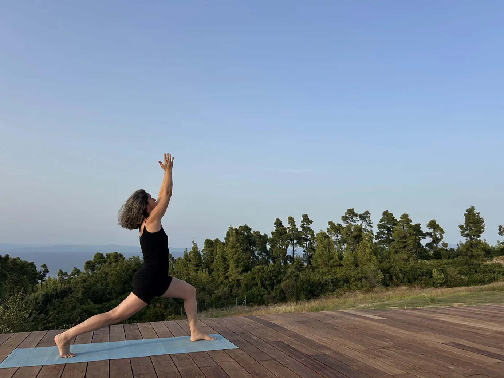
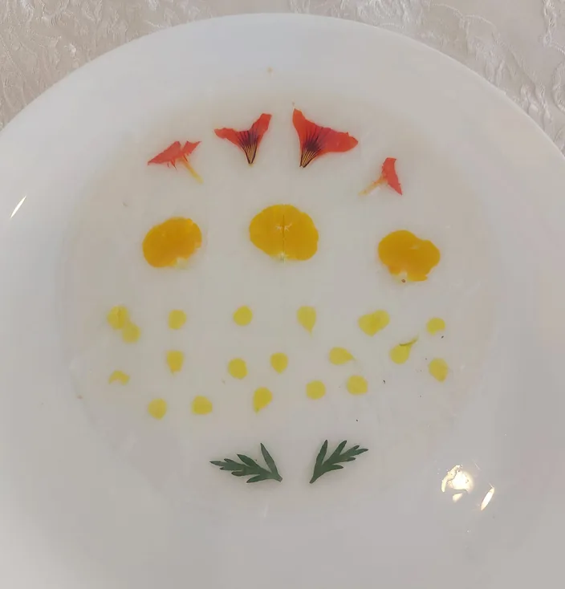
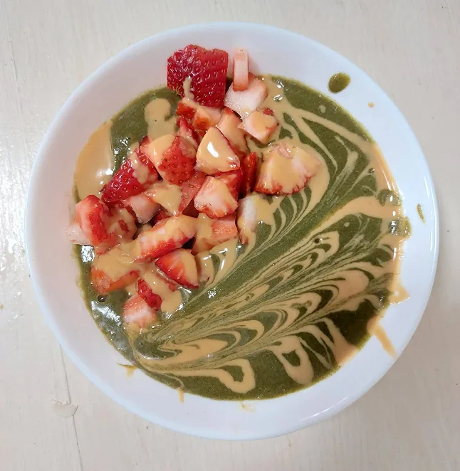
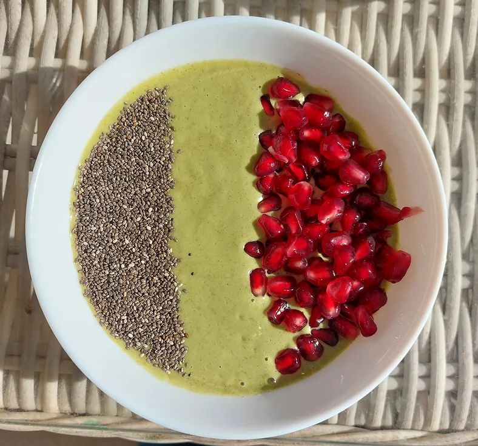
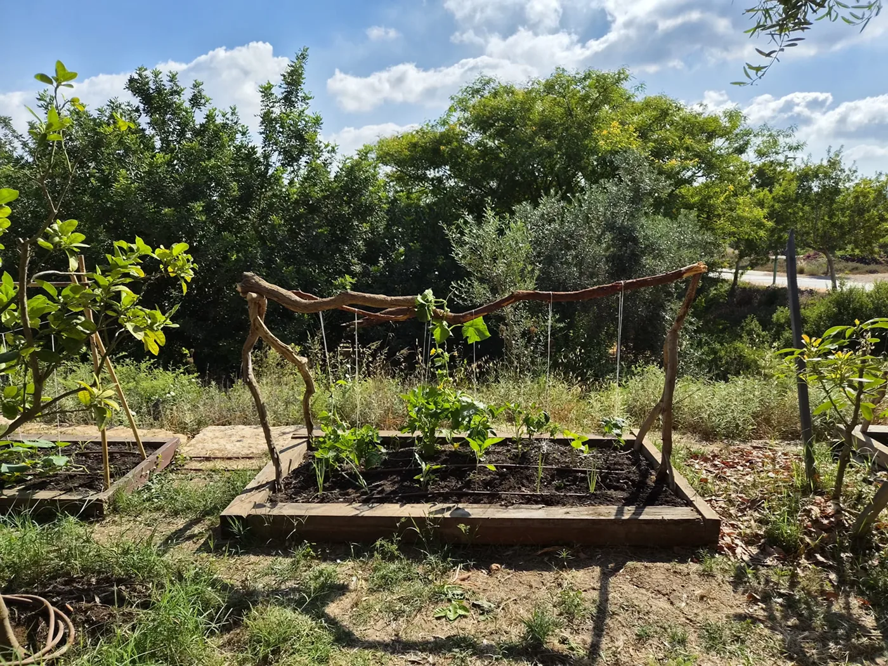
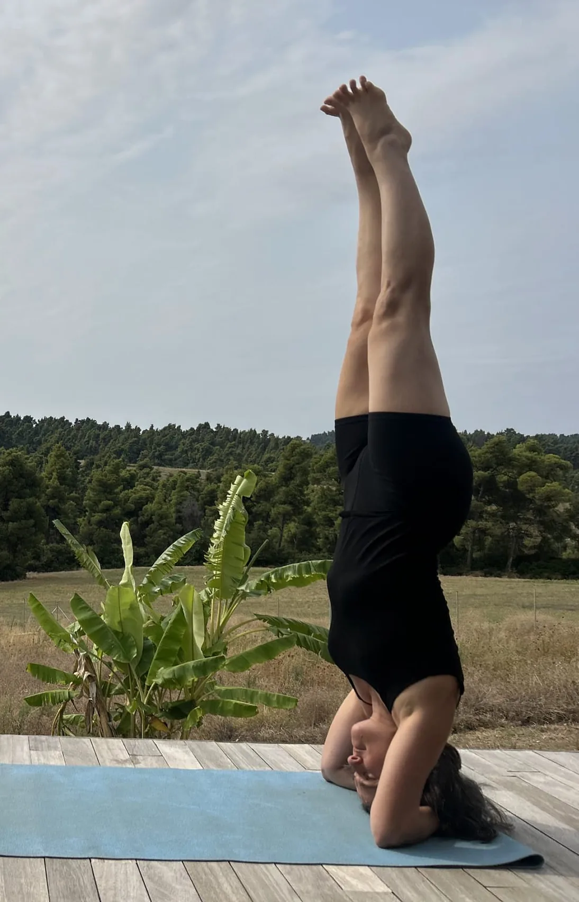
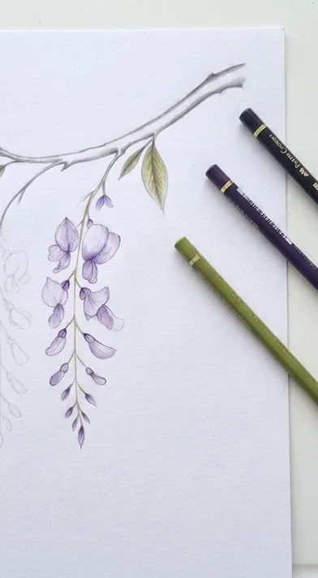
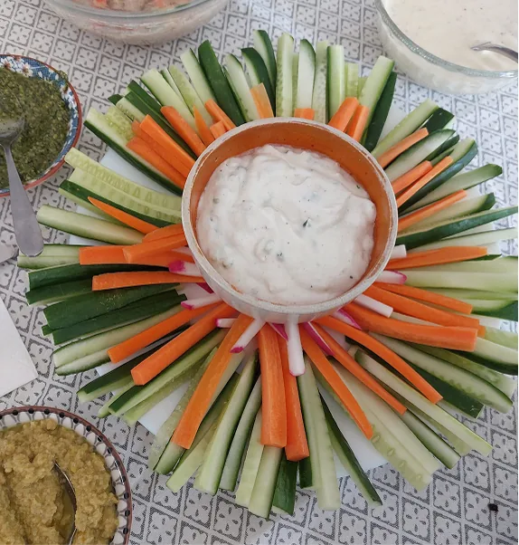
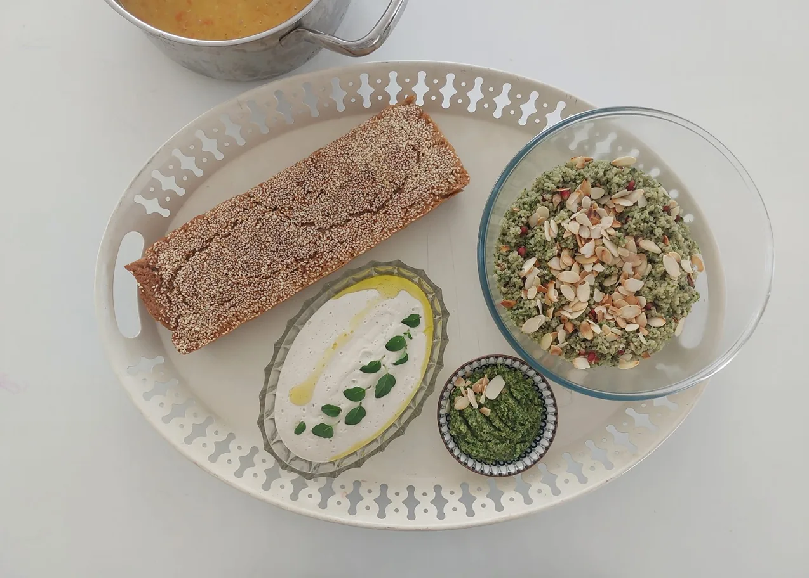

Most UX designers start with screens. I started with the human body: designing products worn directly on it, thinking about fit, comfort, and how something holds up through real, everyday movement. There's a thin thread running through my career: much of what I did as an industrial designer was, in practice, UX work, running clinical trials, usability testing, and working closely with product teams, thinking holistically about the physical and digital product together, as one complete experience.
That's the lens I brought to Safe Pregnancy, an FDA-cleared wearable for high-risk pregnancy monitoring: designing not just the app, but how a physical device, a clinical workflow, and a worried patient at 2am all had to work together. It's the same lens I used at SAP, translating a technical AI platform into something a business user could actually build with, without ever opening a ticket to IT, and it's the lens I'm applying now to We Learn, a learning platform for a community of women I'm part of.
When I'm not working
I live on a kibbutz, where I help run the community's cultural life and a schnitzel stand I built a small ordering system for. I garden, practice yoga daily, and spend time on hands-on projects, from an organic winter garden to a community trail mapping edible plants.








